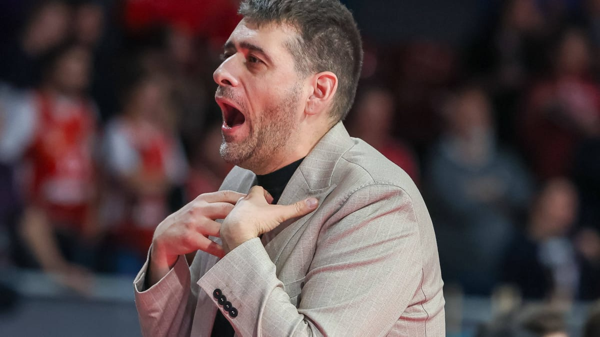

2006
Makedonikos B.C. — Assistant Coach
Professional coaching career began in Greece.
Professional basketball coach
A coaching profile built around professional experience in Germany (BBL), Greece (GBL), Kazakhstan (VTB LEAGUE) and Poland (PLK).
Profile
Konstantinos “Kostas” Papazoglou is a Greek professional basketball coach. His career spans coaching roles in Greece, Poland, Kazakhstan and Germany, as well as experience in international competition.
At Basketball Löwen Braunschweig, Papazoglou served as an assistant coach in 2012/13 and again from 2020 to 2025. He was appointed Head Coach in July 2025 for the 2025/26 easyCredit BBL season. The club announced the end of that appointment in February 2026.
This site is a professional identity and contact page. It distinguishes verified public records from personal coaching perspective; it does not make ranking promises or present unverified performance claims as fact.
Clear preparation. Accountable leadership. Player-centred development within a competitive team environment.
Career chronology
The chronology below reflects the published career record and is linked to source material in the references section.
Professional coaching career began in Greece.
Polish Basketball League.
National-team scouting role.
Greek Basket League and EuroCup participation.
Greek professional basketball.
Greek professional basketball.
First coaching appointment in Germany’s Basketball Bundesliga.
Promoted to Head Coach in 2016.
Head Coach · 2016Greek professional basketball.
The Basketball Tournament.
VTB United League.
Greek professional basketball.
Greek Basket League and Basketball Champions League.
Six assistant-coaching seasons across his two spells with the club.
Appointed in July 2025; the club announced the separation in February 2026.
easyCredit BBLGerman basketball
In July 2025, Basketball Löwen Braunschweig appointed Papazoglou as Head Coach. The official easyCredit BBL preview subsequently identified 2025/26 as his first full BBL season in the position.
His prior work in Braunschweig included the 2012/13 season and a continuous assistant-coach spell from 2020. The club records more than 200 games on the sideline as an assistant coach as of June 2025.
Read the easyCredit BBL profile ↗
Two spells at Braunschweig: 2012/13, then 2020–2026.
Experience cited by the club includes Basketball Champions League and FIBA Europe Cup.
Available through the direct email and LinkedIn profile below.
Coaching photography
Selected images show game-day leadership, a timeout huddle and courtside direction in Braunschweig.

Game-day leadership

Timeout preparation

Team communication
Public sources
These external sources support the core professional identity and Braunschweig chronology presented above.
Professional enquiries
For Head Coach opportunities, professional basketball enquiries or media contact, please get in touch directly.